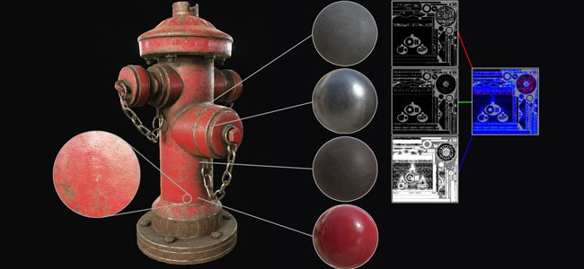
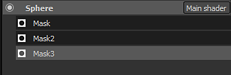
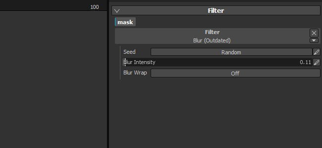

Substance Painter 2.2 adds a new workflow which si the Dynamic Material Layering.
Release date : 21 July 2016

With this new version we add a new workflow called the Material Layering. Traditional texturing workflows rely on creating textures at high resolution to preserve details but this is not convenient for the use case. A more interesting approach instead is to create small tilling material and repeat them inside a shader. It allows to preserve a certain quality and the ability to zoom really close to the object using this shader without losing details. The only problem is that to preview the end result it was previously mandatory to go to the game engine/renderer that display the final shader. That's not true anymore since in this new version it is now possible to use a similar shader inside Substance Painter, which let you visualize the end result and paint at the same time.
A new sample project named "FireHydrant" has been added to showcase the new workflow.

This new workflow opens two ways of working :
In any case, it is possible to define a new layer stack each time which gives more freedom when creating the masks and materials. Management of layers is much more easier this way and each stack can have its own set of specific channels that can be blended in the final shader.
We also have a special shader for Unity 5 and Unreal Engine 4 available on Share :
For more details, see the dedicated page of the documentation : Dynamic Material Layering

We improved the mini shelf that appear in various place of the application with a dedicated search field. This improvement makes the search for ressources much more convneient and pleasant to use. The custom search is preserved during the current session of the application. For example, if you use a lot grunge noises, using this keyword will makes
Our latest video tutorial cover the new features :
(Released 21 July 2016)
Added :
Fixed :
Known Issue :